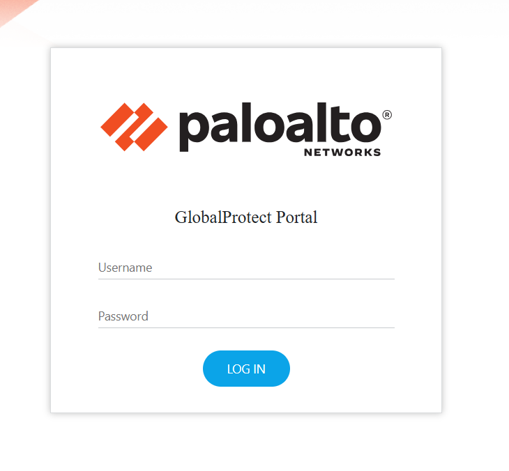
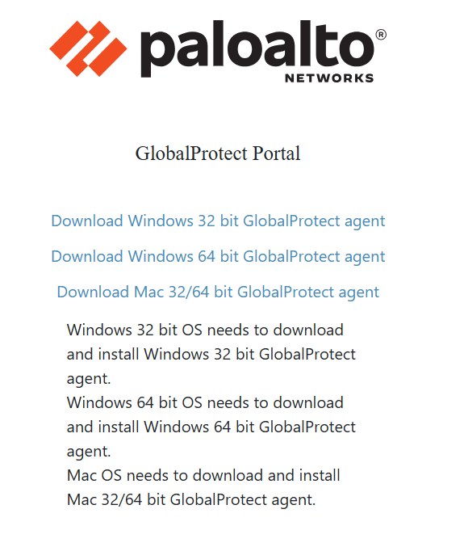
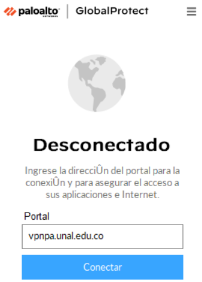
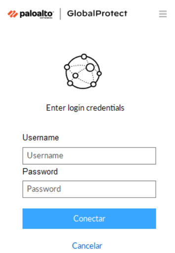
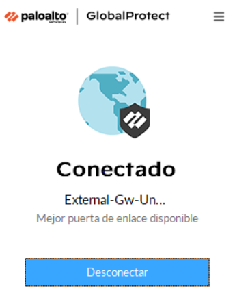

Tutorial de conexión al HPC de la Facultad de Ingeniería desde Windows¶
Esta guía explica cómo conectarse al HPC desde Windows usando GlobalProtect para la VPN institucional y OpenSSH para el acceso por llave RSA.
El acceso al VPN y al HPC depende de una aprobación previa de los administradores. Primero debe generar su llave pública, enviarla con sus datos mediante el formulario y esperar una respuesta favorable antes de intentar conectarse.
Objetivos¶
- Generar una llave SSH RSA de 4096 bits.
- Enviar la llave pública al formulario institucional y esperar aprobación.
- Instalar y usar GlobalProtect.
- Conectarse a la VPN institucional.
- Configurar OpenSSH en Windows.
- Conectarse al HPC mediante SSH.
Requisitos previos¶
- Cuenta activa de la Universidad Nacional.
- Windows 10 o Windows 11.
- Conexión a Internet.
Arquitectura de conexión¶
Internet
|
v
vpnpa.unal.edu.co
|
v
GlobalProtect VPN
|
v
Red interna de la Universidad
|
v
HPC
Paso 1: Crear la llave SSH¶
Genere una llave RSA de 4096 bits:
ssh-keygen -t rsa -b 4096
Presione Enter para guardar la llave en la ubicación predeterminada:
C:\Users\NombreUsuario\.ssh\
Cuando el sistema solicite una passphrase, puede dejarla vacía o definir una contraseña segura.
Se crearán dos archivos:
id_rsa
id_rsa.pub
id_rsa: llave privada, no se comparte.id_rsa.pub: llave pública, se envía al administrador del HPC.
Paso 2: Enviar la llave pública y esperar aprobación¶
Envíe el archivo id_rsa.pub desde la carpeta:
C:\Users\NombreUsuario\.ssh\
al formulario de acceso al HPC:
Complete los datos solicitados y adjunte la llave pública.
Hasta recibir una respuesta favorable, no intente conectarse a la VPN ni al HPC.
Paso 3: Descargar GlobalProtect¶
Cuando ya tenga la aprobación, abra un navegador e ingrese a vpnpa.unal.edu.co.
Inicie sesión con sus credenciales institucionales y descargue el instalador de GlobalProtect para Windows.


Paso 4: Instalar GlobalProtect¶
Ejecute el archivo descargado y siga el asistente de instalación.
No es necesario cambiar la configuración predeterminada.
Paso 5: Abrir GlobalProtect¶
Abra GlobalProtect desde el menú Inicio.
En el campo Portal escriba:
vpnpa.unal.edu.co
Seleccione Conectar.

Paso 6: Iniciar sesión¶
Ingrese su usuario y contraseña institucionales cuando aparezca la ventana de autenticación.

Paso 7: Verificar la conexión VPN¶
Si la autenticación fue exitosa, el estado de GlobalProtect debe mostrar Conectado.

Paso 8: Verificar OpenSSH¶
Abra PowerShell como administrador y ejecute:
ssh -V
Debe aparecer una salida similar a esta:
OpenSSH_for_Windows_9.x
Paso 9: Crear el archivo de configuración SSH¶
En la carpeta C:\Users\NombreUsuario\.ssh\, cree un archivo llamado exactamente config.
Puede abrirlo con:
notepad $env:USERPROFILE\.ssh\config
Agregue este contenido:
Host clusterFacIngUN
HostName 168.176.27.104
User SU_USUARIO_HPC
Port 22
IdentityFile ~/.ssh/id_rsa
IdentitiesOnly yes
Reemplace SU_USUARIO_HPC por su usuario institucional.
Paso 10: Verificar el archivo config¶
Ejecute:
dir $env:USERPROFILE\.ssh
Debe ver al menos:
config
id_rsa
id_rsa.pub
Paso 11: Iniciar el servicio ssh-agent¶
Verifique el estado del servicio:
Get-Service ssh-agent
Si está detenido, ejecútelo:
Set-Service ssh-agent -StartupType Automatic
Start-Service ssh-agent
Paso 12: Agregar la llave al agente SSH¶
Agregue la llave privada al agente:
ssh-add $env:USERPROFILE\.ssh\id_rsa
Verifique que quedó cargada:
ssh-add -l
Paso 13: Conectarse al HPC¶
Si el archivo config está bien configurado, conecte con:
ssh clusterFacIngUN
Si necesita compresión de la sesión para transferir grandes cantidades de datos, puede usar:
ssh -CY clusterFacIngUN
La primera vez aparecerá un aviso de autenticidad del host. Responda yes para guardar la huella digital.
Verificar la conexión¶
Una vez dentro del HPC, ejecute:
whoami
Debe mostrar su usuario del HPC.
Cerrar la sesión¶
Para salir del HPC, ejecute:
exit
Después desconecte la VPN desde GlobalProtect.